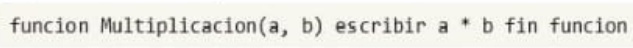

Selecciones la opcion correcta:
Crea una funcion en Pseint o Javascript que imprima todos los numeros del 1 al 50 que sean divisibles por 3 y 7, y al final muestre la suma de los numeros pares y la suma de los impares. Usa un bucle para iterar a traves de los numeros y condiciones para verificar la divisibilidad
¿Cuál es la diferencia principal entre el operador AND y el operador OR en una expresión condicional?
Si un estudiante debe cursar 3 materias en el semeste, y cada una requiere 4 horas de estudio semanales,¿Cuantas horas en total necesitara estudiar en una semana?
¿Cual es una ventaja de utilizar expresiones logicas compuestas en una estructura condicional?
¿Que tecnica de abstraccion es util al dividir un problema en multiples subproblemas para su resolucion en un programa?
En la metodologia de Entrada-Proceso-Salida (E-P-S),¿Que describe mejor la fase de "Proceso"?
¿Como se define una funcion que muestra un mensaje en la consola sin devolver un valor?
¿Que palabra clave se utiliza para devolver un valor en una funcion con retorno en PSeInt?
Seleccione la opcion correcta:
Dado el siguiente diagrama de flujo, siga la secuencia logica de las instrucciones e indique cual de las siguientes salidas es la correcta respecto a todos los valores que van tomando las variables: A,B,C.
Dado el siguiente diagrama de flujo, realice la prueba de escritorio y selecciones el enunciado correcto:
¿Cual es el proposito principal de la abstraccion Entrada-Proceso-Salida en el desarrollo de software?
¿Que se entiende por"corto circuito" en una evaluacion de una expresion condicional compuesta con operadores logicos?
¿Cual de las siguientes tecnicas es fundamental para el desarrollo de un modelo abstracto?
¿Que es un pseudocodigo?
¿Cual de las siguientes afirmaciones sobre la complejidad algoritmica es correcta?
¿Cual es el proposito principal de una constante en un programa?
Si tienes la siguiente funcion: ,¿Que se obtiene al llamarla con ?
¿Cual es la salida si llamamos a la funcion ?
El siguiente algoritmo presenta la suma de los digitos de cualquier numero entero
Indique la linea o lineas que hace el algoritmo no funcione correctamente
El siguiente algoritmo crea una funcion en JS que presente el mayor de los numeros de un arreglo de 10 elementos
¿Cual de las siguientes afirmaciones es verdadera sobre el uso de operadores logicos en estructuras logicas en estructuras condicionales?
Un repartidor debe entregar un paquete en 3 diferentes ubicaciones. Si el tiempo promedio de entrega en cada ubicacion es de 15 minutos,¿Cuanto tiempo total le tomara hacer las entregas?
¿Que sucede si no se respetan las prioridades entre operadores logicos en una expresion condicional?
¿Cual es el objetivo de la optimizacion de algoritmos?
¿Cual de las siguientes NO es un tipo comun de estructura de control en un algortimo?
¿Que se entiende por "mejora continua" en el contexto de desarrollo de software?
¿Cual es la forma correcta de definir una funcion que no devuelve un valor PSeInt?
¿Cual es la funcion principal de los parentesis en una expresion logica que contiene operadores AND y OR?
En un restaurante, cada plato tiene un costo de $12. Si un cliente pide 3 platos, ¿Cual sera el costo total de su pedido?
¿Cual de las siguientes opciones describe un pseudocodigo?
¿Cual es el principal objetivo de la depuracion (debugging) en programacion?
¿Que se entiende por analisis de requerimientos en el contexto de la programacion?
En un diagrama de flujo, ¿Que figura geometrica se utiliza para representar una decision o condicion?
¿Que sucede si intercambiamos devolver un valor en una funcion sin retorno?
¿Cual es la principal diferencia entre una estructura condicional simple y una estructura condicional compuesta?
¿Que se entiende por una condicion anidada en logica de programacion?
En logica de programacion, ¿Que operador tiene mayor prioridad al evaluar una expresion condicional compleja?
¿Cual es la diferencia principal entre un algoritmo iterativo y uno recursivo?
¿Cual es la definicion correcta de un algoritmo?
¿Que caracteristica NO pertenece a los algoritmos?
Si tienes la funcion ,¿Que hara si la llamas como ?
¿Cual es la forma correcta de almacenar el resultado de una funcion con retorno?
¿Cual es el proposito de un bucle en la programacion?
En el desarrollo de modelos abstractos, ¿Cual es el primer paso para resolver un problema?
¿Que resultado produce esta funcion al llamarla con ? 
En el contexto de un programa, ¿Cual es el papel principal de una variable?
¿Que es un compilador en el contexto de la programacion?
¿Cual es el proposito de una funcion en programacion?
¿Cual es la salida de esta funcion si llamamos a ?
En un sistema de calculo de horas trabajadas, si un empleado trabaja 8 horas durante 5 dias, ¿Cuantas horas en total trabajo en la semana?
Si un viaje en tren cuesta $5 por persona y un grupo de 6 personas toma el tren, ¿Cual sera el costo total del viaje?
¿Que operador logico se utiliza para evaluar si dos o mas condiciones son verdaderas al mismo tiempo en una estructura condicional?
¿Que significa que una variable tenga "ambito local" en un programa?
El siguiente algoritmo verifica si un numero es Par o Impar
Una tienda ofrece un descuento del 20% en un producto cuyo precio original es de $50. ¿Cual sera el precio final despues del descuento?
Crea un algoritmo como funcion es Pseint o Javascript que permite verificar si un numero cualquiera es perfecto o no
Un numero es perfecto cuando la suma de los divisores incluidos 1 y excluido el propio numero es igual al propio numero.Ejemplo: si el numero es 6, la suma de los divisores de 6 es (1 + 2 + 3), lo que es igual a 6. Por lo tanto, el numero 6 es perfecto
Escribe un programa que pida al usuario una frase y cuente cuantas palabras tiene. Usa un bucle para recorrer cada letra de la palabra y verificar si es una vocal. Ejemplo: si la frase es "Hola como estas", la respuesta es "3 palabras tiene la frase".
Dado un numero, almacena sus digitos en un arreglo presentando la suma de esos digitos